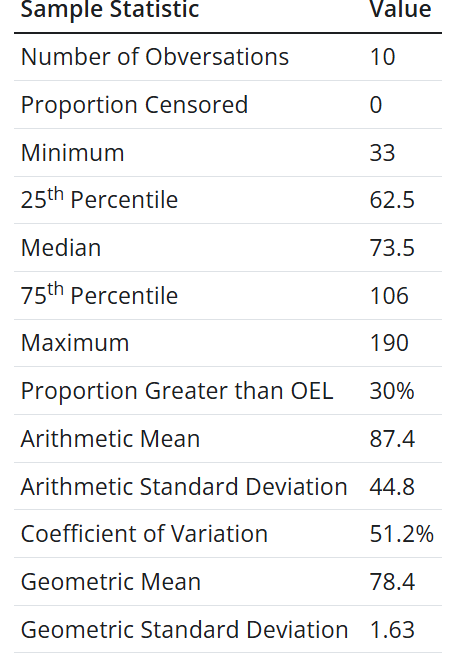
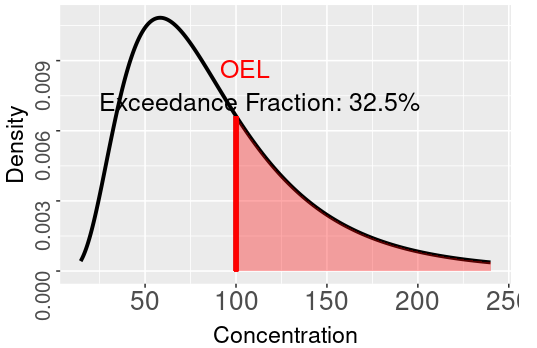
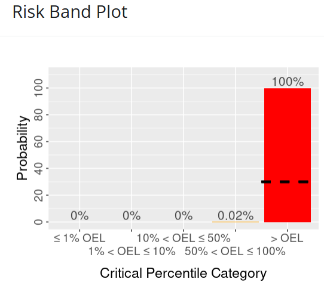
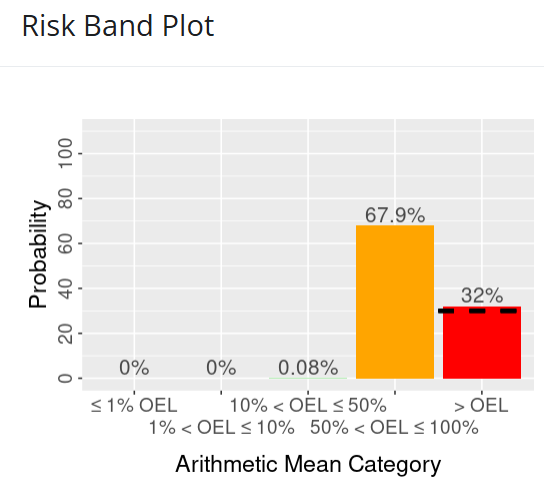

EAD_NOISH manual
(115技師班，含作業環境監測計畫及監測結果報告撰寫實務)
2026-08-07
講師簡介
- 姓名：何明信
- 學歷：成大環醫所 、職安衛技師
- 經歷：檢查員30年 (製造、危機設、營造、化工職衛科、專委)
- 現職：114年退休
- E-mail：msho7336959@gmail.com
NIOSH職業暴露採樣策略手冊
NIOSH(1977)
特色
- 取樣策略：具代表性且有效的取樣。(捕捉暴露變異)
- 合規性：結果符合職業安全與衛生標準？(EA)
1. 取樣策略
- MEG / SEG (隨機)
- 取樣數量與信心水準 (Table 3.1)
- 考慮統計分布模型(常態或對數常態），以利科學分析。
| 標準類型 | 定義 | 應用場景 |
|---|---|---|
| TWA | 平均暴露濃度，通常以 8 小時工作日為基準 | 長期慢性暴露風險 |
| STEL | 15 分鐘平均暴露限值 | 短時間高暴露但非瞬時 |
| Ceiling | 任意時間點不得超過的最高濃度 | 急性效應防護 |
2. EA
- 透過系統化的辨識、測量與統計分析
- 判斷員工是否可能超過OEL，並據此採取管理控制措施。
- 結合了科學數據與專業判斷，避免急性或慢性健康危害。
- EA 步驟：危害辨識、暴露特徵化、暴露測量、統計分析
- 統計決策：95% 信心水準下，合規、可能過度暴露、不合規。
3. 暴露監測計畫
為確保工作場所安全與合規，系統化規劃、執行與評估取樣，以便提供可靠的數據支持暴露風險管理。
流程
- 需求分析
- 監測目的：合規、研究、或健康保護。
- 監測群體：高風險員工、代表性群體或全體。
- 取樣策略
- 選擇代表性取樣方法（隨機、最大風險員工、週期性）。
- 決定取樣數量與信心水準。
- 數據分析
使用統計模型。
判斷合規、可能過度暴露或不合規。
- 需求分析
Case1 案例演練
簡答題
- 請說明 隨機取樣 與 最大風險員工取樣 的差異。
- 為何在暴露評估中需要使用 對數常態分布模型？
Case2 案例演練
情境：某化工廠有 40 名員工，主要作業為使用揮發性有機化合物 (VOC) 進行清洗與溶劑操作。近期有員工反映眼睛刺激與呼吸不適，管理層決定啟動暴露監測計畫。
請依據你的專業，規劃採樣策略 (樣本具代表性、取樣推論具90%信心水準以上)
提示
- 需求分析 (目的+MEG / SEG)
- 採樣設計 (人數、方法)
- 數據分析 (工具、決策標準OEL-TWA / STEL / Celling)
- 管理分級與建議
3.1 採樣方式規劃
不同取樣方式會影響數據的代表性與統計分析方法。
實務
- 合規檢查：檢查員檢查時，最好是全期或全期連續樣本。
研究或初步調查：隨機抓樣能快速提供分布概況。
資源有限時：分期連續樣本可作為替代，但需謹慎解讀。
{kind=link}
4. 統計分析概念
4.1 信賴區間 (4.1 Confidence Interval Limits)
表示數據不確定性範圍，常見設定為 95% 信心水準。
實務
- 單一測量值不足以判定合規，需要透過信賴區間來確保判斷的科學性。
樣本數越多，信賴區間越窄，判定越精確。
當信賴區間涵蓋OEL時，必須進行補充取樣或加強監測。
判定流程
- 收集數據 + 計算平均值及標準差
- 建立信賴區間
- 統計計算 95% 信賴區間的上下限 (LCL/UCL)。
- 與標準比較 (TWA、STEL、Celling)
- 判定 (合規、可能過度暴露、不合規)
- 後續措施
{kind=link}
4. 統計分析概念 (續)
- 誤差：隨機採樣誤差+化學分析誤差 = CVT (見附件D)
- 測值 X 僅是真實暴露濃度 μ 的一個「點估計值」。
- 為兼顧合規與保護勞工，引入單邊 95% 信賴區間的假說檢定。
4.2 EA of TWA_8hr
4.2.1 全時段單一樣本（Full Period Single Sample Measurement）
- 計算參數與步驟
- 數據標準化 (使OEL=1) \(x= X / OEL\)
- 計算信賴上限（UCL95%）
- 檢查員：「違規檢定」（H0: μ≤OEL）： LCL95%=x−1.645×CVT
- 若 \(x\) ≤1.0，檢查員無須計算 LCL，直接判定無法證明違規。
- 雇主的：「合規檢定」（H0: μ>OEL）： UCL95%=x+1.645×CVT
- 若 \(x\)>1.0，雇主無須計算 UCL，判定可能超標或不合規。
- 檢查員：「違規檢定」（H0: μ≤OEL）： LCL95%=x−1.645×CVT
- 暴露風險分類
- A區：LCL95% > 1.0
- 指排除測量隨機誤差後，仍有 95% 以上的統計信心確信勞工真實暴露平均值已超越標準。必須控制並重新採樣。
- B區：LCL95% ≤ 1.0 ≤ UCL95%。
- 重新採樣，提高監測頻率以降低不確定性。
- C區：UCL95% < 1.0。
- 有 95% 以上的統計信心確認真實暴露低於OEL，維持定期評估。
- A區：LCL95% > 1.0
Case3 案例演練
- 已知現場監測數據：
- 被測化學因子：苯氯乙酮（alpha-chloroacetophenone）
- 量測儀器：活性碳管與個人採樣泵，流率 100 cc/min，連續採樣 8 小時（全時段）。
- 實驗室分析報告濃度 X：0.04 ppm
- 該採樣分析方法之總變異係數 (CVT)：0.09
- 法定 8 小時 TWA 容許濃度 (OEL)：0.05 ppm
- 請進行暴露管理分級(含計算)與建議
- 提示：UCL95%=0.95
- 若使用軟體工具，怎麼處理？
4.2 EA of TWA_8hr (續)
4.2.2.1 全時段連續樣品量測（Full Period Consecutive Samples）
黃金標準，相較於單一 8 小時的樣品，連續收集數個短時間樣品（例如 2 個 4 小時樣品）能提供EA優勢：
縮小信賴區間：因為增加樣本數（n）。
考慮日間變異：掌握暴露實態。
假設：在各時段內，為均勻暴露（Uniform Exposure）？
Case4 案例演練
- 已知現場監測數據：
- 被測物：異戊醇 isoamyl alcohol
- 8 小時 TWA 標準（OEL）：100 ppm
- 方法之總變異係數（CVT）：0.08
- 連續個人採樣數據：
X1 = 90 ppm，T1 = 150 min
X2 = 140 ppm，T2 = 100 min
X3 = 110 ppm，T3 = 230 min
- 請進行暴露管理分級與建議
- 提示：UCL95%=1.02
4.2 EA of TWA_8hr (續)
4.2.2.2 部分時段連續樣品量測（Partial Period Measurement）
(略) 沒研究，有興趣請自習
4.2 EA of TWA_8hr (續)
4.2.3 瞬時採樣策略（Grab Samples Measurement）
- 儀器：使用直讀式氣體偵測器、檢知管等時
- 當小樣本(n<30)時，用對數常態模型
- 計算參數與步驟
- 數據標準化 \(x= X / OEL\)
- 對數轉換 \(y_i =log_{10}(x_i)\)
- 計算算術平均值與樣本標準差，查圖( Figure 4.3)判定
Case5 案例演練
- 已知現場監測數據：
被測化學因子：乙醇（Ethyl Alcohol）
量測方法：個人採樣泵（流率 25 cc/min），共採集 8 個活性碳管抓樣，每管暴露 20 分鐘
法定 8 小時 TWA 標準（OEL）：1000 ppm
該方法的總變異係數（CVT）：0.06
實驗室報告的 8 筆原始測定濃度（Xi）： 1225, 800, 1120, 1460, 975, 980, 525, 1290 ppm
- 請進行暴露管理分級與建議 (使用AIHA方法)
- 提示： \(X_{95}=GM⋅GSD^{1.645}=1.71\)
4.2 EA of TWA_8hr (續)
4.2.4 瞬時採樣策略（Grab Samples Measurement）
- 儀器：使用直讀式氣體偵測器、檢知管等時
- 當大樣本(n>30)時，用常態模型(中央極限定理)
- 計算式： \(UCL_{95\%} =\overline{x} +1.645⋅\frac{s}{\sqrt{n}}\)
Case6 案例演練
- 已知現場監測數據：
- 量測對象：用直讀式臭氧分析儀與紀錄器，監測一名固定站點勞工的暴露。
- 法定 8 小時 TWA 標準（OEL）：0.1 ppm。
- 樣本數 n：於 8 小時班次內隨機選取 35 個時間點讀取濃度值（大樣本 n>30）。
- 35 筆原始測定濃度 Xi（ppm）：
0.077, 0.043, 0.061, 0.070, 0.107, 0.084, 0.062, 0.127, 0.057, 0.101, 0.072, 0.145, 0.084, 0.101, 0.105, 0.125, 0.076, 0.079, 0.078, 0.067, 0.073, 0.069, 0.084, 0.066, 0.085, 0.080, 0.071, 0.103, 0.075, 0.048, 0.092, 0.066, 0.109, 0.110, 0.057
- 請進行暴露管理分級與建議
- 提示： \(UCL_{95\%} =\overline{x} +1.645⋅\frac{s}{\sqrt{n}}\)
4.2 EA of 最高容許濃度（Ceiling)
- 防止急性毒性、嚴重刺激或麻醉效應
- 在預期高濃度時段採集的短期樣本，通過統計學假設檢定，評估勞工暴露風險。
- 計算參數與步驟
- 篩選最大值並標準化
- 計算 \(UCL_{95\%} =max{(x)} +1.645⋅CV_T\)
- 暴露風險判定
Case7 案例演練
- 已知現場監測數據：(硫化氫（Hydrogen Sulfide, H2S）。
- 方法：檢知管，CVT：0.14，Celling：20 ppm (OSHA)
- 暴露量測：該勞工在班次內約有 16 個短暫暴露時段，評估者隨機抽選其中 5 個時段進行量測（n=5），獲得以下 5 筆原始測定濃度： 12, 14, 13, 16, 15 ppm
- 請進行暴露管理分級與建議
- 提示：\(UCL_{95\%} =max{(x)} +1.645⋅CV_T\)
- 如果使用MSA ALTAIR 5X (內建幫浦) 來量測，結果是？
- 直讀式偵測器經氣體校正後，CVT=0.05
小結
- 監測的目的在於科學化評估勞工的長期暴露實態
- EA 專業：利用有限天數監測數據（日與日間變異），科學推論勞工在未監測工作日中的超標風險，進而理性決定是否投入裝設工程控制設施。
- 勞工在日間（Day-to-day）的 8 小時 TWA 暴露並非恆定不變，而是受製程產量、氣流、原料及人員操作習慣等動態波動。科學實證，長期日間 8 小時 TWA 暴露呈現對數常態分佈，該分佈由兩個參數決定：GM，GSD。
- 隨機採樣與化學分析誤差（通常 CVT≤0.10） 相較於日間環境變異度 (GSD 介於 1.5 至 2.5 之間），對長期平均值估算的不確定性影響微乎其微。
- 暴露控制決策目標（5% ）： 安全衛生的自主管理目標，是將勞工日暴露 TWA 超越法定容許標準（STD/PEL）的機率，限制在 5% 以下。(不合規率必須小於或等於 0.05)
Case8 案例演練
已知監測數據與參數：(ref: P65 section 4.4)
- 二氧雜環己烷（Dioxane），8 小時 TWA 法定容許標準100 ppm。
- 6 個月內隨機挑選 10 天實施 8 小時個人 TWA 採樣（n=10）： {67, 51, 33, 72, 122, 75, 110, 93, 61, 190}
請進行暴露管理分級與建議
- 請用Expostats tool1 進行暴露評估與建議
- 建議閱讀文獻
- Jérôme Lavoué, Lawrence Joseph, Peter Knott, Hugh Davies, France Labrèche, Frédéric Clerc, Gautier Mater, Tracy Kirkham, Expostats: A Bayesian Toolkit to Aid the Interpretation of Occupational Exposure Measurements, Annals of Work Exposures and Health, Volume 63, Issue 3, April 2019, Pages 267–279, https://doi.org/10.1093/annweh/wxy100
 |
 |
 |
 |
{kind=link}
{kind=link}
{kind=link}
{kind=link}
持續更新中~~~